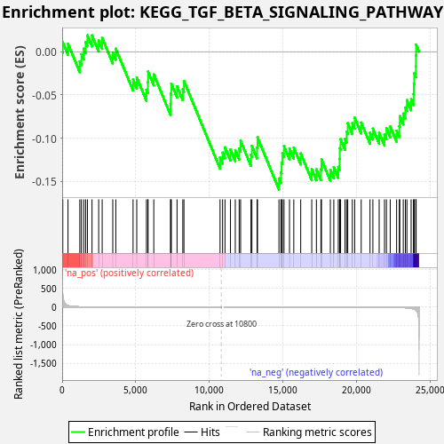
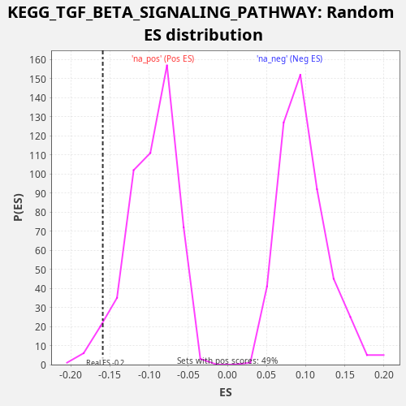

| Dataset | LabCL |
| Phenotype | NoPhenotypeAvailable |
| Upregulated in class | na_neg |
| GeneSet | KEGG_TGF_BETA_SIGNALING_PATHWAY |
| Enrichment Score (ES) | -0.15924364 |
| Normalized Enrichment Score (NES) | -1.6523294 |
| Nominal p-value | 0.03550296 |
| FDR q-value | 0.17765917 |
| FWER p-Value | 0.943 |

| SYMBOL | RANK IN GENE LIST | RANK METRIC SCORE | RUNNING ES | CORE ENRICHMENT | |
|---|---|---|---|---|---|
| 1 | PITX2 | 44 | 320.982 | 0.0110 | No |
| 2 | TGFB2 | 397 | 41.227 | 0.0093 | No |
| 3 | CREBBP | 1199 | 8.831 | -0.0111 | No |
| 4 | ACVR2A | 1310 | 7.367 | -0.0028 | No |
| 5 | PPP2R1A | 1465 | 6.060 | 0.0036 | No |
| 6 | BMP4 | 1594 | 5.181 | 0.0112 | No |
| 7 | SMAD6 | 1715 | 4.356 | 0.0190 | No |
| 8 | PPP2CB | 2028 | 2.982 | 0.0189 | No |
| 9 | TGFBR1 | 2481 | 1.931 | 0.0131 | No |
| 10 | BMPR2 | 2719 | 1.539 | 0.0161 | No |
| 11 | CDKN2B | 3438 | 0.855 | -0.0008 | No |
| 12 | RBL1 | 3644 | 0.752 | 0.0035 | No |
| 13 | GDF7 | 4816 | 0.325 | -0.0321 | No |
| 14 | E2F5 | 5067 | 0.268 | -0.0296 | No |
| 15 | BMP8A | 5725 | 0.171 | -0.0440 | No |
| 16 | RHOA | 5821 | 0.160 | -0.0351 | No |
| 17 | SMAD9 | 5836 | 0.159 | -0.0229 | No |
| 18 | INHBE | 6225 | 0.122 | -0.0261 | No |
| 19 | SMAD4 | 7362 | 0.053 | -0.0603 | No |
| 20 | ACVR1C | 7378 | 0.052 | -0.0481 | No |
| 21 | RPS6KB2 | 7416 | 0.051 | -0.0368 | No |
| 22 | SMAD7 | 7804 | 0.035 | -0.0400 | No |
| 23 | THBS3 | 8195 | 0.025 | -0.0433 | No |
| 24 | THBS4 | 8273 | 0.023 | -0.0337 | No |
| 25 | ACVR1 | 10725 | 0.000 | -0.1223 | No |
| 26 | INHBC | 10898 | 0.000 | -0.1166 | No |
| 27 | TGFB3 | 11061 | -0.000 | -0.1105 | No |
| 28 | BMP5 | 11432 | -0.000 | -0.1130 | No |
| 29 | AMH | 11760 | -0.001 | -0.1137 | No |
| 30 | PPP2CA | 12025 | -0.002 | -0.1118 | No |
| 31 | SMAD2 | 12122 | -0.003 | -0.1029 | No |
| 32 | THBS1 | 12826 | -0.009 | -0.1192 | No |
| 33 | TFDP1 | 12888 | -0.009 | -0.1089 | No |
| 34 | ROCK1 | 13240 | -0.015 | -0.1106 | No |
| 35 | SP1 | 13270 | -0.015 | -0.0990 | No |
| 36 | TNF | 14727 | -0.052 | -0.1464 | Yes |
| 37 | CHRD | 14862 | -0.056 | -0.1391 | Yes |
| 38 | E2F4 | 14904 | -0.058 | -0.1280 | Yes |
| 39 | SMAD3 | 14958 | -0.060 | -0.1174 | Yes |
| 40 | SKP1 | 15069 | -0.065 | -0.1091 | Yes |
| 41 | GDF5 | 15443 | -0.080 | -0.1117 | Yes |
| 42 | ZFYVE16 | 15734 | -0.096 | -0.1109 | Yes |
| 43 | MAPK1 | 16205 | -0.124 | -0.1176 | Yes |
| 44 | RPS6KB1 | 16954 | -0.182 | -0.1357 | Yes |
| 45 | CUL1 | 17271 | -0.215 | -0.1359 | Yes |
| 46 | FST | 17577 | -0.251 | -0.1357 | Yes |
| 47 | MAPK3 | 17616 | -0.256 | -0.1245 | Yes |
| 48 | SMAD1 | 18218 | -0.344 | -0.1365 | Yes |
| 49 | RBL2 | 18452 | -0.387 | -0.1334 | Yes |
| 50 | ROCK2 | 18756 | -0.449 | -0.1331 | Yes |
| 51 | TGFBR2 | 18847 | -0.467 | -0.1240 | Yes |
| 52 | MYC | 18855 | -0.470 | -0.1115 | Yes |
| 53 | GDF6 | 18913 | -0.486 | -0.1010 | Yes |
| 54 | RBX1 | 19213 | -0.569 | -0.1005 | Yes |
| 55 | BMP8B | 19324 | -0.600 | -0.0923 | Yes |
| 56 | BMPR1B | 19400 | -0.625 | -0.0826 | Yes |
| 57 | BMP2 | 19710 | -0.741 | -0.0825 | Yes |
| 58 | ACVR2B | 19870 | -0.811 | -0.0763 | Yes |
| 59 | EP300 | 20314 | -1.013 | -0.0818 | Yes |
| 60 | ID3 | 20911 | -1.429 | -0.0936 | Yes |
| 61 | INHBA | 21106 | -1.642 | -0.0888 | Yes |
| 62 | SMAD5 | 21533 | -2.199 | -0.0936 | Yes |
| 63 | BMPR1A | 21896 | -2.918 | -0.0958 | Yes |
| 64 | PPP2R1B | 22027 | -3.270 | -0.0884 | Yes |
| 65 | THBS2 | 22285 | -4.206 | -0.0862 | Yes |
| 66 | SMURF1 | 22719 | -6.936 | -0.0913 | Yes |
| 67 | SMURF2 | 22902 | -8.661 | -0.0860 | Yes |
| 68 | ACVRL1 | 22934 | -8.983 | -0.0745 | Yes |
| 69 | TGFB1 | 23171 | -12.378 | -0.0714 | Yes |
| 70 | ID1 | 23313 | -15.293 | -0.0644 | Yes |
| 71 | ZFYVE9 | 23419 | -17.795 | -0.0559 | Yes |
| 72 | ID4 | 23705 | -32.130 | -0.0549 | Yes |
| 73 | LTBP1 | 23873 | -49.151 | -0.0490 | Yes |
| 74 | INHBB | 23889 | -50.837 | -0.0368 | Yes |
| 75 | BMP6 | 23914 | -54.172 | -0.0250 | Yes |
| 76 | BMP7 | 24027 | -80.634 | -0.0168 | Yes |
| 77 | ID2 | 24031 | -81.810 | -0.0041 | Yes |
| 78 | NOG | 24043 | -85.312 | 0.0083 | Yes |

{kind=link}
{kind=link}